How to create a VM from a template
Overview
To simplify the process of creating a VM, you can use a pre-built VM template from a catalog.
For information about creating a VM from scratch, see How to create a VM from scratch.
The steps for creating a VM depend on the version of vCloud Director available in your environment:
Creating a VM from a template (vCloud Director 8.20)
In vCloud Director, select the My Cloud tab.

Open the vApp in which you want to create the VM.
Tip
To create a new vApp, see How to create a vApp.
On the Virtual Machines tab, click the Add VM icon.

On the Add Virtual Machines page, you can create a VM using a template in your own organisation's catalog (creating vApp catalogs is covered in How to create a vApp catalog) or from UKCloud's public catalog.
For example, to create a VM from the UKCloud public catalog, from the Look in list, select Public Catalogs.
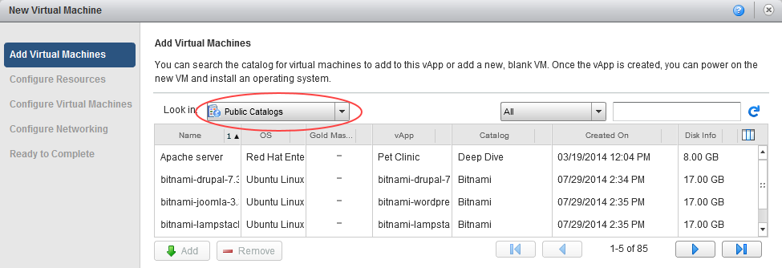
Select the template you want to use depending on the operating system and VM size.
Tip
You can use the search field to find the template you're looking for, or use the arrows to scroll through the available choices.
When you've found the template you want to use, click Add to add a VM based on that template to the vApp. The VM should now be visible in the lower box.
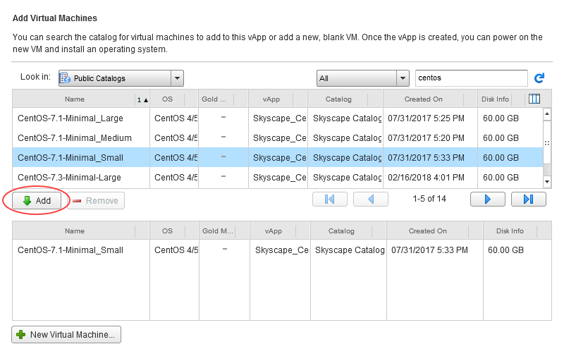
Tip
You can add multiple VMs to the vApp at the same time using the catalogs.
When you've finished adding VMs, click Next.
On the Configure Resources page, in the Virtual Machine field, enter a name your VM.
Note
This is the name of the VM, not the actual OS host name.
From the Storage Policy list, select a storage policy to assign the VM to.
Note
We recommend using the
*-*-*-Anyoption as this will ensure your VMs are balanced evenly across all storage pools. However, you could use this option to specifically separate VMs on different storage if required for high availability purposes. For example, you could specifically place VMs on*.*.*-Storage1as opposed to*.*.*-Storage2. For more information, visit the Knowledge Centre.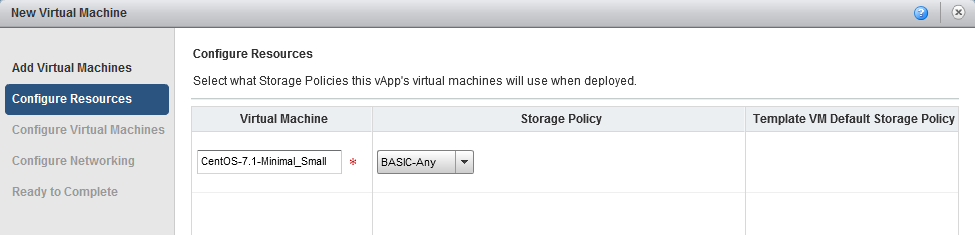
Click Next.
On the Configure Virtual Machines page, in the Computer Name field, define the host name of the VM.
From the Network list, select the network to connect the VM to.
From the IP Assignment list, select:
- Static - IP Pool (the usual method) to inject an IP address into the VM via VMware Tools from a list of available IP addresses. The address may vary with each boot, but there is a checkbox to keep IP address assignments elsewhere within the UI once the VMs are created.
- Static - Manual to specify a valid IP address from the pool that the VM will then keep.
- DHCP to specify that vCloud Director should interact with the OS via VMware Tools to use DHCP rather than static IPs. You'll need to define a DHCP server on your edge gateway.
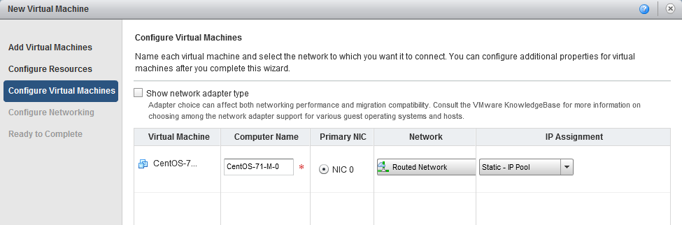
Click Next.
On the Configure Networking page, configure the networking for your VM and then click Next.
Note
For information about vApp network fencing, see How to create a vApp network.
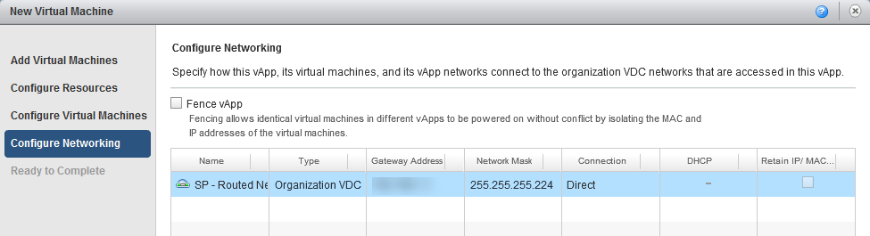
On the summary page, review your settings and then click Finish.
The platform will start creating your VM.
When your VM has finished deploying, right-click the newly created VM within the vApp and select Power On.

Creating a VM from a template (vCloud Director 9.1)
In the vCloud Director Virtual Datacenters dashboard, select the VDC that contains the vApp in which you want to create the VM.
In the left navigation panel, select vApps to view a list of vApps within the VDC.
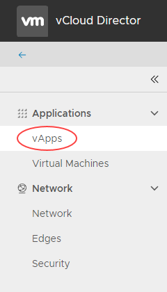
In the card for the vApp in which you want to create the VM, click More then select Add VM.
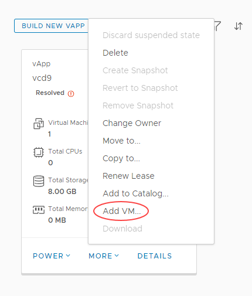
Tip
To create a new vApp, see How to create a vApp.
In the Add VMs to <vApp> page, click Add Virtual Machine.
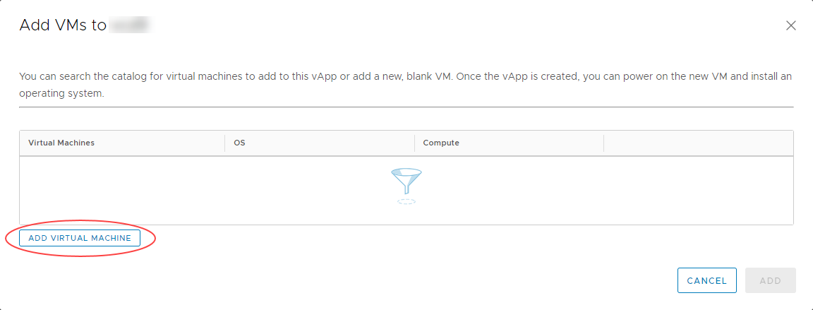
In the Create VM dialog box, from the Type radio buttons, select From Template.
Enter a Name, Computer Name and Description for your VM.
Tip
Name is a name to identify the VM, Computer Name is the host name of the VM.
From the list of Templates, select the template that you want to use for your VM, depending on your required operating system and VM size.
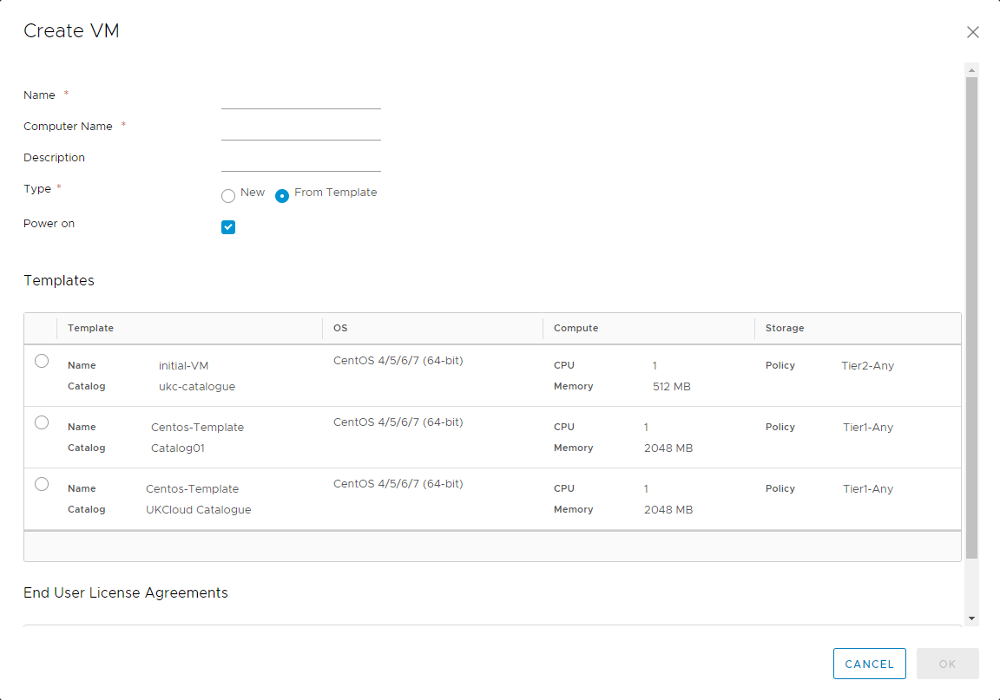
Tip
Creating vApp catalogs is covered in How to create a vApp catalog
When you're done, click OK.
In the Add VMs to <vApp> dialog box, you can create more VMs or click Add when you're done.
You can stay in the dialog box to monitor progress or click Cancel to return to the list of vApps.
In the left navigation panel, select Virtual Machines to view a list of VMs within the VDC.
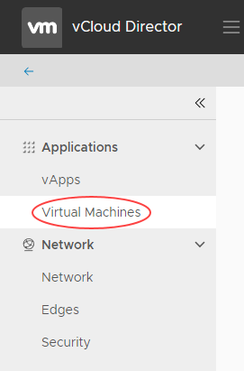
In the card for your new VM, click Details then select General.
On the General tab, from the Storage Policy list, select a storage policy to assign the VM to.
Note
We recommend using the
*-*-*-Anyoption as this will ensure your VMs are balanced evenly across all storage pools. However, you could use this option to specifically separate VMs on different storage if required for high availability purposes. For example, you could specifically place VMs on*.*.*-Storage1as opposed to*.*.*-Storage2. For more information, visit the Knowledge Centre.
Select the Hardware tab.
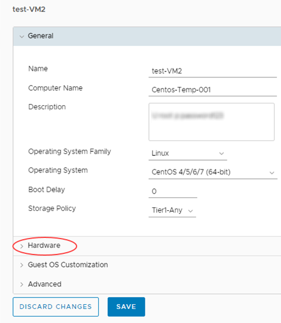
On this tab you can configure CPU, memory, hard disks and networking.
To add a new network interface controller (NIC), in the NICs section, click Add, configure the parameters as required, then select the Connected check box.
From the IP Mode list, select:
- Static - IP Pool (the usual method) to inject an IP address into the VM via VMware Tools from a list of available IP addresses. The address may vary with each boot, but there is a check box to keep IP address assignments elsewhere within the UI once the VMs are created.
- Static - Manual to specify a valid IP address from the pool that the VM will then keep.
- DHCP to specify that vCloud Director should interact with the OS via VMware Tools to use DHCP rather than static IPs. You'll need to define a DHCP server on your edge gateway.
Tip
If the MAC address for a newly added NIC is blank, click Save to generate one.
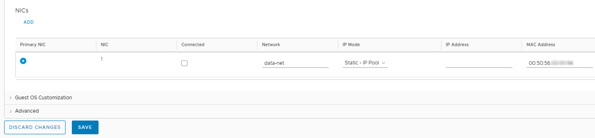
When you're done, click Save.
To power on your new VM, click Power then select Power On.
Feedback
If you have any comments on this document or any other aspect of your UKCloud experience, send them to products@ukcloud.com.